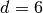

2. Machine Learning 101: General Concepts¶
Objectives
By the end of this section you will
- Know how to extract features from real-world data in order to perform machine learning tasks.
- Know the basic categories of supervised learning, including classification and regression problems.
- Know the basic categories of unsupervised learning, including dimensionality reduction and clustering.
- Understand the distinction between linearly separable and non-linearly separable data.
In addition, you will know several tools within scikit-learn which can be used to accomplish the above tasks.
In this section we will begin to explore the basic principles of machine learning. Machine Learning is about building programs with tunable parameters (typically an array of floating point values) that are adjusted automatically so as to improve their behavior by adapting to previously seen data.
Machine Learning can be considered a subfield of Artificial Intelligence since those algorithms can be seen as building blocks to make computers learn to behave more intelligently by somehow generalizing rather that just storing and retrieving data items like a database system would do.
A very simple example of a machine learning task can be seen in the following figure: it shows a collection of two-dimensional data, colored according to two different class labels. A classification algorithm is used to draw a dividing boundary between the two clusters of points:
Example Linear Decision Boundary
As with all figures in this tutorial, the above image has a hyper-link to the python source code which is used to generate it.
2.1. Features and feature extraction¶
Most machine learning algorithms implemented in scikit-learn expect a numpy array as input X. The expected shape of X is (n_samples, n_features).
| n_samples: | The number of samples: each sample is an item to process (e.g. classify). A sample can be a document, a picture, a sound, a video, a row in database or CSV file, or whatever you can describe with a fixed set of quantitative traits. |
|---|---|
| n_features: | The number of features or distinct traits that can be used to describe each item in a quantitative manner. |
The number of features must be fixed in advance. However it can be very high dimensional (e.g. millions of features) with most of them being zeros for a given sample. In this case we may use scipy.sparse matrices instead of numpy arrays so as to make the data fit in memory.
2.1.1. A simple example: the iris dataset¶
Note
The information in this section is available in an interactive notebook 01_datasets.ipynb, which can be viewed using iPython notebook.
The machine learning community often uses a simple flowers database where each row in the database (or CSV file) is a set of measurements of an individual iris flower. Each sample in this dataset is described by 4 features and can belong to one of the target classes:
Features in the Iris dataset:
- sepal length in cm
- sepal width in cm
- petal length in cm
- petal width in cm
Target classes to predict:
- Iris Setosa
- Iris Versicolour
- Iris Virginica
scikit-learn embeds a copy of the iris CSV file along with a helper function to load it into numpy arrays:
>>> from sklearn.datasets import load_iris
>>> iris = load_iris()
The features of each sample flower are stored in the data attribute of the dataset:
>>> n_samples, n_features = iris.data.shape
>>> n_samples
150
>>> n_features
4
>>> iris.data[0]
array([ 5.1, 3.5, 1.4, 0.2])
The information about the class of each sample is stored in the target attribute of the dataset:
>>> len(iris.target) == n_samples
True
>>> iris.target
array([0, 0, 0, 0, 0, 0, 0, 0, 0, 0, 0, 0, 0, 0, 0, 0, 0, 0, 0, 0, 0, 0, 0,
0, 0, 0, 0, 0, 0, 0, 0, 0, 0, 0, 0, 0, 0, 0, 0, 0, 0, 0, 0, 0, 0, 0,
0, 0, 0, 0, 1, 1, 1, 1, 1, 1, 1, 1, 1, 1, 1, 1, 1, 1, 1, 1, 1, 1, 1,
1, 1, 1, 1, 1, 1, 1, 1, 1, 1, 1, 1, 1, 1, 1, 1, 1, 1, 1, 1, 1, 1, 1,
1, 1, 1, 1, 1, 1, 1, 1, 2, 2, 2, 2, 2, 2, 2, 2, 2, 2, 2, 2, 2, 2, 2,
2, 2, 2, 2, 2, 2, 2, 2, 2, 2, 2, 2, 2, 2, 2, 2, 2, 2, 2, 2, 2, 2, 2,
2, 2, 2, 2, 2, 2, 2, 2, 2, 2, 2, 2])
The names of the classes are stored in the last attribute, namely target_names:
>>> list(iris.target_names)
['setosa', 'versicolor', 'virginica']
2.1.2. Handling categorical features¶
Sometimes people describe samples with categorical descriptors that have no obvious numerical representation. For instance assume that each flower is further described by a color name among a fixed list of color names:
color in ['purple', 'blue', 'red']
The simple way to turn this categorical feature into numerical features suitable for machine learning is to create new features for each distinct color name that can be valued to 1.0 if the category is matching or 0.0 if not.
The enriched iris feature set would hence be in this case:
- sepal length in cm
- sepal width in cm
- petal length in cm
- petal width in cm
- color#purple (1.0 or 0.0)
- color#blue (1.0 or 0.0)
- color#red (1.0 or 0.0)
2.1.3. Extracting features from unstructured data¶
The previous example deals with features that are readily available in a structured dataset with rows and columns of numerical or categorical values.
However, most of the produced data is not readily available in a structured representation such as SQL, CSV, XML, JSON or RDF.
Here is an overview of strategies to turn unstructed data items into arrays of numerical features.
Text documents: Count the frequency of each word or pair of consecutive words in each document. This approach is called Bag of Words
Note: we include other file formats such as HTML and PDF in this category: an ad-hoc preprocessing step is required to extract the plain text in UTF-8 encoding for instance.
Images:
Rescale the picture to a fixed size and take all the raw pixels values (with or without luminosity normalization)
Take some transformation of the signal (gradients in each pixel, wavelets transforms...)
Compute the Euclidean, Manhattan or cosine similarities of the sample to a set reference prototype images aranged in a code book. The code book may have been previously extracted from the same dataset using an unsupervised learning algorithm on the raw pixel signal.
Each feature value is the distance to one element of the code book.
Perform local feature extraction: split the picture into small regions and perform feature extraction locally in each area.
Then combine all the features of the individual areas into a single array.
Sounds: Same strategy as for images within a 1D space instead of 2D
Practical implementations of such feature extraction strategies will be presented in the last sections of this tutorial.
2.2. Supervised Learning, Unsupervised Learning, and scikit-learn syntax¶
Machine learning can be broken into two broad regimes: supervised learning and unsupervised learning. We’ll introduce these concepts here, and discuss them in more detail below.
In Supervised Learning, we have a dataset consisting of both features and labels. The task is to construct an estimator which is able to predict the label of an object given the set of features. A relatively simple example is predicting the species of iris given a set of measurements of its flower. This is a relatively simple task. Some more complicated examples are:
- given a multicolor image of an object through a telescope, determine whether that object is a star, a quasar, or a galaxy.
- given a photograph of a person, identify the person in the photo.
- given a list of movies a person has watched and their personal rating of the movie, recommend a list of movies they would like (A famous example is the Netflix Prize).
What these tasks have in common is that there is one or more unknown quantities associated with the object which needs to be determined from other observed quantities. Supervised learning is further broken down into two categories, classification and regression. In classification, the label is discrete, while in regression, the label is continuous. For example, in astronomy, the task of determining whether an object is a star, a galaxy, or a quasar is a classification problem: the label is from three distinct categories. On the other hand, we might wish to determine the age of an object based on such observations: this would be a regression problem: the label (age) is a continuous quantity.
Unsupervised Learning addresses a different sort of problem. Here the data has no labels, and we are interested in finding similarities between the objects in question. In a sense, you can think of unsupervised learning as a means of discovering labels from the data itself. Unsupervised learning comprises tasks such as dimensionality reduction, clustering, and density estimation. For example, in the iris data discussed above, we can used unsupervised methods to determine combinations of the measurements which best display the structure of the data. As we’ll see below, such a projection of the data can be used to visualize the four-dimensional dataset in two dimensions. Some more involved unsupervised learning problems are:
- given detailed observations of distant galaxies, determine which features or combinations of features are most important in distinguishing between galaxies.
- given a mixture of two sound sources (for example, a person talking over some music), separate the two (this is called the blind source separation problem).
- given a video, isolate a moving object and categorize in relation to other moving objects which have been seen.
scikit-learn strives to have a uniform interface across all methods, and we’ll see examples of these below. Given a scikit-learn estimator object named model, the following methods are available:
- Available in all Estimators
- model.fit() : fit training data. For supervised learning applications, this accepts two arguments: the data X and the labels y (e.g. model.fit(X, y)). For unsupervised learning applications, this accepts only a single argument, the data X (e.g. model.fit(X)).
- Available in supervised estimators
- model.predict() : given a trained model, predict the label of a new set of data. This method accepts one argument, the new data X_new (e.g. model.predict(X_new)), and returns the learned label for each object in the array.
- model.predict_proba() : For classification problems, some estimators also provide this method, which returns the probability that a new observation has each categorical label. In this case, the label with the highest probability is returned by model.predict().
- Available in unsupervised estimators
- model.transform() : given an unsupervised model, transform new data into the new basis. This also accepts one argument X_new, and returns the new representation of the data based on the unsupervised model.
- model.fit_transform() : some estimators implement this method, which performs a fit and a transform on the same input data.
2.3. Supervised Learning: model.fit(X, y)¶

Overview of supervised Learning with scikit-learn
As mentioned above, a supervised learning algorithm makes the distinction between the raw observed data X with shape (n_samples, n_features) and some label given to the model during training. In scikit-learn this array is often noted y and has generally the shape (n_samples,). After training, the fitted model will try to predict the most likely labels y_new for new a set of samples X_new.
Depending on the nature of the target y, supervised learning can be given different names:
- If y has values in a fixed set of categorical outcomes (represented by integers) the task to predict y is called classification.
- If y has floating point values (e.g. to represent a price, a temperature, a size...), the task to predict y is called regression.
2.3.1. Classification¶
Classification is the task of predicting the value of a categorical variable given some input variables (a.k.a. the features or “predictors”). This section includes a first exploration of classification with scikit-learn. We’ll explore a detailed example of classification with astronomical data in Classification: Learning Labels of Astronomical Sources.
2.3.1.1. A first classifier example with scikit-learn¶
Note
The information in this section is available in an interactive notebook 02_iris_classification.ipynb, which can be viewed using iPython notebook.
In the iris dataset example, suppose we are assigned the task to guess the class of an individual flower given the measurements of petals and sepals. This is a classification task, hence we have:
>>> X, y = iris.data, iris.target
Once the data has this format it is trivial to train a classifier, for instance a support vector machine with a linear kernel:
>>> from sklearn.svm import LinearSVC
>>> clf = LinearSVC()
Note
Whenever you import a scikit-learn class or function for the first time, you are advised to read the docstring by using the ? magic suffix of ipython, for instance type: LinearSVC?.
clf is a statistical model that has parameters that control the learning algorithm (those parameters are sometimes called the hyperparameters). Those hyperparameters can be supplied by the user in the constructor of the model. We will explain later how to choose a good combination using either simple empirical rules or data driven selection:
>>> clf
LinearSVC(C=1.0, dual=True, fit_intercept=True, intercept_scaling=1,
loss='l2', multi_class=False, penalty='l2', tol=0.0001)
By default the real model parameters are not initialized. They will be tuned automatically from the data by calling the fit method:
>>> clf = clf.fit(X, y)
>>> clf.coef_
array([[ 0.18..., 0.45..., -0.80..., -0.45...],
[ 0.05..., -0.89..., 0.40..., -0.93...],
[-0.85..., -0.98..., 1.38..., 1.86...]])
>>> clf.intercept_
array([ 0.10..., 1.67..., -1.70...])
Once the model is trained, it can be used to predict the most likely outcome on unseen data. For instance let us define a list of simple sample that looks like the first sample of the iris dataset:
>>> X_new = [[ 5.0, 3.6, 1.3, 0.25]]
>>> clf.predict(X_new)
array([0], dtype=int32)
The outcome is 0 which is the id of the first iris class, namely ‘setosa’.
The following figure places the location of the fit and predict calls on the previous flow diagram. The vec object is a vectorizer used for feature extraction that is not used in the case of the iris data (it already comes as vectors of features):
Some scikit-learn classifiers can further predict probabilities of the outcome. This is the case of logistic regression models:
>>> from sklearn.linear_model import LogisticRegression
>>> clf2 = LogisticRegression().fit(X, y)
>>> clf2
LogisticRegression(C=1.0, dual=False, fit_intercept=True, intercept_scaling=1,
penalty='l2', tol=0.0001)
>>> clf2.predict_proba(X_new)
array([[ 9.07512928e-01, 9.24770379e-02, 1.00343962e-05]])
This means that the model estimates that the sample in X_new has:
- 90% likelyhood to belong to the ‘setosa’ class
- 9% likelyhood to belong to the ‘versicolor’ class
- 1% likelyhood to belong to the ‘virginica’ class
Of course, the predict method that outputs the label id of the most likely outcome is also available:
>>> clf2.predict(X_new)
array([0], dtype=int32)
2.3.1.2. Notable implementations of classifiers¶
sklearn.linear_model.LogisticRegression
Regularized Logistic Regression based on liblinear
Support Vector Machines without kernels based on liblinear
Support Vector Machines with kernels based on libsvm
sklearn.linear_model.SGDClassifier
Regularized linear models (SVM or logistic regression) using a Stochastic Gradient Descent algorithm written in Cython
sklearn.neighbors.NeighborsClassifier
k-Nearest Neighbors classifier based on the ball tree datastructure for low dimensional data and brute force search for high dimensional data
sklearn.naive_bayes.GaussianNB
Gaussian Naive Bayes model. This is an unsophisticated model which can be trained very quickly. It is often used to obtain baseline results before moving to a more sophisticated classifier.
2.3.1.3. Sample application of classifiers¶
The following table gives examples of applications of classifiers for some common engineering tasks:
| Task | Predicted outcomes |
|---|---|
| E-mail classification | Spam, normal, priority mail |
| Language identification in text documents | en, es, de, fr, ja, zh, ar, ru... |
| News articles categorization | Business, technology, sports... |
| Sentiment analysis in customer feedback | Negative, neutral, positive |
| Face verification in pictures | Same / different person |
| Speaker verification in voice recordings | Same / different person |
| Astronomical Sources | Object type or class |
2.3.2. Regression¶
Regression is the task of predicting the value of a continuously varying variable (e.g. a price, a temperature, a conversion rate...) given some input variables (a.k.a. the features, “predictors” or “regressors”). We’ll explore a detailed example of regression with astronomical data in Regression: Photometric Redshifts of Galaxies.
Some notable implementations of regression models in scikit-learn include:
L2-regularized least squares linear model
sklearn.linear_model.ElasticNet
L1+L2-regularized least squares linear model trained using Coordinate Descent
sklearn.linear_model.LassoLARS
L1-regularized least squares linear model trained with Least Angle Regression
sklearn.linear_model.SGDRegressor
L1+L2-regularized least squares linear model trained using Stochastic Gradient Descent
sklearn.linear_model.ARDRegression
Bayesian Automated Relevance Determination regression
Non-linear regression using Support Vector Machines (wrapper for libsvm)
sklearn.ensemble.RandomForestRegressor
An ensemble method which constructs multiple decision trees from subsets of the data.
2.4. Unsupervised Learning: model.fit(X)¶
Unsupervised Learning overview
An unsupervised learning algorithm only uses a single set of observations X with shape (n_samples, n_features) and does not use any kind of labels.
An unsupervised learning model will try to fit its parameters so as to best summarize regularities found in the data.
The following introduces the main variants of unsupervised learning algorithms, namely dimensionality reduction and clustering.
2.4.1. Dimensionality Reduction and visualization¶
Dimensionality reduction is the task of deriving a set of new artificial features that is smaller than the original feature set while retaining most of the variance of the original data.
2.4.1.1. Normalization and visualization with PCA¶
Note
The information in this section is available in an interactive notebook 03_iris_dimensionality.ipynb, which can be viewed using iPython notebook.
The most common technique for dimensionality reduction is called Principal Component Analysis.
PCA can be done using linear combinations of the original features using a truncated Singular Value Decomposition of the matrix X so as to project the data onto a base of the top singular vectors.
If the number of retained components is 2 or 3, PCA can be used to visualize the dataset:
>>> from sklearn.decomposition import PCA
>>> pca = PCA(n_components=2, whiten=True).fit(X)
Once fitted, the pca model exposes the singular vectors in the components_ attribute:
>>> pca.components_
array([[ 0.17..., -0.04..., 0.41..., 0.17...],
[-1.33..., -1.48..., 0.35..., 0.15...]])
>>> pca.explained_variance_ratio_
array([ 0.92..., 0.05...])
>>> pca.explained_variance_ratio_.sum()
0.97...
Let us project the iris dataset along those first 2 dimensions:
>>> X_pca = pca.transform(X)
The dataset has been “normalized”, which means that the data is now centered on both components with unit variance:
>>> import numpy as np
>>> np.round(X_pca.mean(axis=0), decimals=5)
array([-0., 0.])
>>> np.round(X_pca.std(axis=0), decimals=5)
array([ 1., 1.])
Furthermore the samples components do no longer carry any linear correlation:
>>> import numpy as np
>>> np.round(np.corrcoef(X_pca.T), decimals=5)
array([[ 1., -0.],
[-0., 1.]])
We can visualize the dataset using pylab, for instance by defining the following utility function:
>>> import pylab as pl
>>> from itertools import cycle
>>> def plot_2D(data, target, target_names):
... colors = cycle('rgbcmykw')
... target_ids = range(len(target_names))
... pl.figure()
... for i, c, label in zip(target_ids, colors, target_names):
... pl.scatter(data[target == i, 0], data[target == i, 1],
... c=c, label=label)
... pl.legend()
... pl.show()
...
Calling plot_2D(X_pca, iris.target, iris.target_names) will display the following:

2D PCA projection of the iris dataset
Note that this projection was determined without any information about the labels (represented by the colors): this is the sense in which the learning is unsupervised. Nevertheless, we see that the projection gives us insight into the distribution of the different flowers in parameter space: notably, iris setosa is much more distinct than the other two species.
Note
The default implementation of PCA computes the SVD of the full data matrix, which is not scalable when both n_samples and n_features are big (more that a few thousands).
If you are interested in a number of components that is much smaller than both n_samples and n_features, consider using sklearn.decomposition.RandomizedPCA instead.
2.4.1.2. Other applications of dimensionality reduction¶
Dimensionality Reduction is not just useful for visualization of high dimensional datasets. It can also be used as a preprocessing step (often called data normalization) to help speed up supervised machine learning methods that are not computationally efficient with high n_features such as SVM classifiers with gaussian kernels for instance or that do not work well with linearly correlated features.
Note
scikit-learn also features an implementation of Independant Component Analysis (ICA) and several manifold learning methods (See Exercise 3: Dimensionality Reduction of Spectra)
2.4.2. Clustering¶
Clustering is the task of gathering samples into groups of similar samples according to some predefined similarity or dissimilarity measure (such as the Euclidean distance).
For example, let us reuse the output of the 2D PCA of the iris dataset and try to find 3 groups of samples using the simplest clustering algorithm (KMeans):
>>> from sklearn.cluster import KMeans
>>> from numpy.random import RandomState
>>> rng = RandomState(42)
>>> kmeans = KMeans(n_clusters=3, random_state=rng).fit(X_pca)
>>> np.round(kmeans.cluster_centers_, decimals=2)
array([[ 1.02, -0.71],
[ 0.33, 0.89],
[-1.29, -0.44]])
>>> kmeans.labels_[:10]
array([2, 2, 2, 2, 2, 2, 2, 2, 2, 2])
>>> kmeans.labels_[-10:]
array([0, 0, 1, 0, 0, 0, 1, 0, 0, 1])
We can plot the assigned cluster labels instead of the target names with:
plot_2D(X_pca, kmeans.labels_, ["c0", "c1", "c2"])

KMeans cluster assignements on 2D PCA iris data
Exercise
Repeat the clustering algorithm from above, but fit the clusters to the full dataset X rather than the projection X_pca. Do the labels computed this way better match the true labels?
2.4.2.1. Notable implementations of clustering models¶
The following are two well-known clustering algorithms. Like most unsupervised learning models in the scikit, they expect the data to be clustered to have the shape (n_samples, n_features):
The simplest, yet effective clustering algorithm. Needs to be provided with the number of clusters in advance, and assumes that the data is normalized as input (but use a PCA model as preprocessor).
Can find better looking clusters than KMeans but is not scalable to high number of samples.
- sklearn.cluster.DBSCAN
- Can detect irregularly shaped clusters based on density, i.e. sparse regions in the input space are likely to become inter-cluster boundaries. Can also detect outliers (samples that are not part of a cluster).
sklearn.manifold.LocallyLinearEmbedding
Locally Linear Embedding is a nonlinear neighbors-based manifold learning technique. The scikit-learn implementation makes available several variants to the basic algorithm.
Isomap is another neighbors-based manifold learning method that can find nonlinear projections of data.
Other clustering algorithms do not work with a data array of shape (n_samples, n_features) but directly with a precomputed affinity matrix of shape (n_samples, n_samples):
sklearn.cluster.AffinityPropagation
Clustering algorithm based on message passing between data points.
sklearn.cluster.SpectralClustering
KMeans applied to a projection of the normalized graph Laplacian: finds normalized graph cuts if the affinity matrix is interpreted as an adjacency matrix of a graph.
- Ward implements hierarchical clustering based on the Ward algorithm,
- a variance-minimizing approach. At each step, it minimizes the sum of squared differences within all clusters (inertia criterion).
DBSCAN can work with either an array of samples or an affinity matrix.
2.4.2.2. Applications of clustering¶
Here are some common applications of clustering algorithms:
- Building customer profiles for market analysis
- Grouping related web news (e.g. Google News) and websearch results
- Grouping related stock quotes for investment portfolio management
- Can be used as a preprocessing step for recommender systems
- Can be used to build a code book of prototype samples for unsupervised feature extraction for supervised learning algorithms
2.5. Linearly separable data¶
Some supervised learning problems can be solved by very simple models (called generalized linear models) depending on the data. Others simply don’t.
To grasp the difference between the two cases, run the interactive example from the examples folder of the scikit-learn source distribution. (if you don’t have the scikit-learn source code locally installed, you can find the script here):
% python $SKL_HOME/examples/svm_gui.py
- Put some data points belonging to one of the two target classes (‘white’ or ‘black’) using left click and right click.
- Choose some parameters of a Support Vector Machine to be trained on this toy dataset (n_samples is the number of clicks, n_features is 2).
- Click the Fit but to train the model and see the decision boundary. The accurracy of the model is displayed on stdout.
The following figures demonstrate one case where a linear model can perfectly separate the two classes while the other is not linearly separable (a model with a gaussian kernel is required in that case).
Linear Support Vector Machine trained to perfectly separate 2 sets of data points labeled as white and black in a 2D space.
Support Vector Machine with gaussian kernel trained to separate 2 sets of data points labeled as white and black in a 2D space. This dataset would not have been seperated by a simple linear model.
Exercise
Fit a model that is able to solve the XOR problem using the GUI: the XOR problem is composed of 4 samples:
- 2 white samples in the top-left and bottom-right corners
- 2 black samples in the bottom-left and top-right corners
Question: is the XOR problem linearly separable?
Exercise
Construct a problem with less than 10 points where the predictive accuracy of the best linear model is 50%.
Note
the higher the dimension of the feature space, the more likely the data is linearly separable: for instance this is often the case for text classification tasks.
2.6. Hyperparameters, training set, test set and overfitting¶
The above SVM example displays an example of hyperparameters, which are model parameters set before the training process. For example, when using an RBF model, we choose the kernel coefficient gamma before fitting the data. We must be able to then evaluate the goodness-of-fit of our model given this choice of hyperparameter.
The most common mistake beginners make when training statistical models is to evaluate the quality of the model on the same data used for fitting the model:
If you do this, you are doing it wrong!
2.6.1. The overfitting issue¶
Evaluating the quality of the model on the data used to fit the model can lead to overfitting. Consider the following dataset, and three fits to the data (we’ll explore this example in more detail in the next section).

Examples of over-fitting and under-fitting a two-dimensional dataset.
Evaluating the  model using the training data might lead you to believe the model is very good, when in fact it does not do a good job of representing the data. The problem lies in the fact that some models can be subject to the overfitting issue: they can learn the training data by heart without generalizing. The symptoms are:
- the predictive accurracy on the data used for training can be excellent (sometimes 100%)
- however, the models do little better than random prediction when facing new data that was not part of the training set
If you evaluate your model on your training data you won’t be able to tell whether your model is overfitting or not.
2.6.2. Solutions to overfitting¶
The solution to this issue is twofold:
- Split your data into two sets to detect overfitting situations:
- one for training and model selection: the training set
- one for evaluation: the test set
- Avoid overfitting by using simpler models (e.g. linear classifiers instead of gaussian kernel SVM) or by increasing the regularization parameter of the model if available (see the docstring of the model for details)
An even better option when experimenting with classifiers is to divide the data into three sets: training, testing and holdout. You can then optimize your features, settings and algorithms for the testing set until they seem good enough, and finally test on the holdout set (perhaps after adding the test set to the training set).
When the amount of labeled data available is small, it may not be feasible to construct training and test sets. In that case, you can choose to use k-fold cross validation: divide the dataset into k = 10 parts of (roughly) equal size, then for each of these ten parts, train the classifier on the other nine and test on the held-out part.
2.6.3. Measuring classification performance on a test set¶
Note
The information in this section is available in an interactive notebook 05_iris_crossval.ipynb, which can be viewed using iPython notebook.
Here is an example on you to split the data on the iris dataset.
First we need to shuffle the order of the samples and the target to ensure that all classes are well represented on both sides of the split:
>>> indices = np.arange(n_samples)
>>> indices[:10]
array([0, 1, 2, 3, 4, 5, 6, 7, 8, 9])
>>> RandomState(42).shuffle(indices)
>>> indices[:10]
array([ 73, 18, 118, 78, 76, 31, 64, 141, 68, 82])
>>> X = iris.data[indices]
>>> y = iris.target[indices]
We can now split the data using a 2/3 - 1/3 ratio:
>>> split = (n_samples * 2) / 3
>>> X_train, X_test = X[:split], X[split:]
>>> y_train, y_test = y[:split], y[split:]
>>> X_train.shape
(100, 4)
>>> X_test.shape
(50, 4)
>>> y_train.shape
(100,)
>>> y_test.shape
(50,)
We can now re-train a new linear classifier on the training set only:
>>> clf = LinearSVC().fit(X_train, y_train)
To evaluate its quality we can compute the average number of correct classifications on the test set:
>>> np.mean(clf.predict(X_test) == y_test)
1.0
This shows that the model has a predictive accurracy of 100% which means that the classification model was perfectly capable of generalizing what was learned from the training set to the test set: this is rarely so easy on real life datasets as we will see in the following chapter.
In the next section, we will explore in more detail the bias-variance tradeoff and the practical use of machine learning techniques.
2.7. Key takeaway points¶
- Build X (features vectors) with shape (n_samples, n_features)
- Supervised learning: clf.fit(X, y) and then clf.predict(X_new)
- Classification: y is an array of integers
- Regression: y is an array of floats
- Unsupervised learning: clf.fit(X)
- Dimensionality Reduction with clf.transform(X_new)
- for visualization
- for scalability
- Clustering finds group id for each sample
- Dimensionality Reduction with clf.transform(X_new)
- Some models work much better with data normalized with PCA
- Simple linear models can fail completely (non linearly separable data)
- Simple linear models often very useful in practice (esp. with large n_features)
- Before starting to train a model: split train / test data:
- use training set for model selection and fitting
- use test set for model evaluation
- use cross-validation when your dataset is small
- Complex models can overfit (learn by heart) the training data and
fail to generalize correctly on test data:
- try simpler models first
- tune the regularization parameter on a validation set